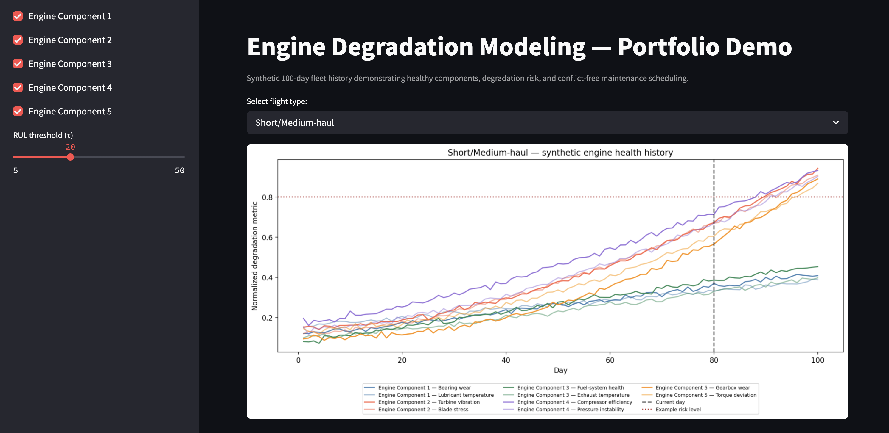
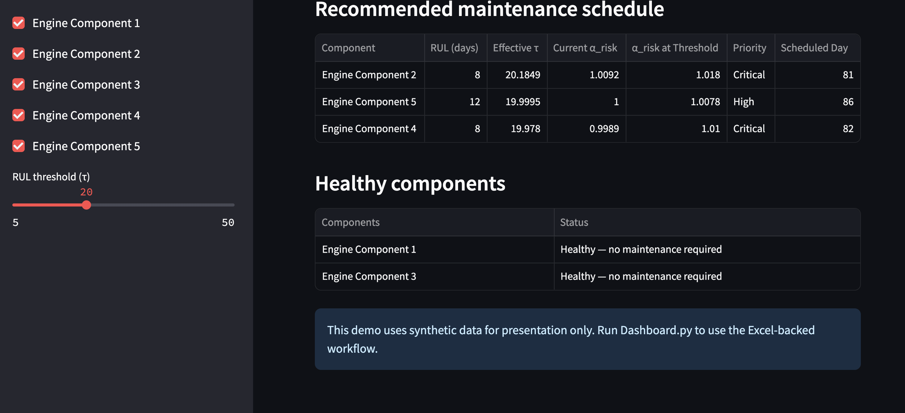

Stochastic Environment & Sensors
- 8×8 grid (4×64-bit board masks)
- Perturbed T'ij = max(0, Tij(1+ε))
- Acoustic floor obs (Squeak/Scratch)
- Noisy Manhattan dist e ∈ {−1,0,1,2}
- Search feedback ((x,y), hit/miss)
OpponentTempoTrackerbitmask diff
BeliefTracker (64-State HMM)
- Sanitizes NaN/Inf/zero-sum rows in T
- Caches T, T² & b1000 = b0·T¹⁰⁰⁰
- Bayes fusion: b⁻ · P(noise|x) · P(d|x)
- Zero-posterior steady-state recovery
- Pre-warmed
@jax.jitmatvec kernels - Forward rollouts:
predict_layers(ply)
SearchEngine & MidEvaluator
- Dynamic clock pacing (0.08–7.2 s/turn)
- Iterative-deepening negamax (d ≤ 13)
- 120k TT (EXACT/LOWER/UPPER) + killers
- Multi-turn MacroContext (runs 4–7)
- V = 115PΔ + 46Qc + 17.5C + 16RΔ
- Tempo-window PRIME safety probes
Sense vs. Act Gate
- EVs = 4(0.9p) − 2(1−0.9p)
- Compares EVs vs board gain
- Cooldown & attempt caps
- Score-lead risk scaling
Board.is_valid_move()guard- Legal fallback guarantee
Bayesian 64-State POMDP Estimator (BeliefTracker)
- Transition Sanitization & Burn-In: Sanitizes incoming 64×64 transition matrices (perturbed by εij ∼ U(−0.1, 0.1) in the game engine) against NaN/Inf and zero-sum rows, caches matrix powers (
T,T²), and computes the exact 1,000-step rat head-start distribution (b1000 = b0·T¹⁰⁰⁰) from uniform prior b0(i) = 1/64. - Multi-Modal Bayesian Sensor Fusion: Extracts 64-bit board masks (
_space,_primed,_carpet,_blocked) to evaluate floor-dependent acoustic likelihoods P(noise | x) and noisy Manhattan distance likelihoods P(d | x) with offset distribution e ∈ {−1, 0, +1, +2} at P(e) = (0.12, 0.70, 0.12, 0.06), clamping negative estimates at d = 0:bt+1(x) ∝ [bt(x)·T^k] · P(noise | cell(x)) · P(d_obs | Manhattan(o, x)) - Search Feedback & Pre-Warmed JAX Rollouts: Zeros out missed search cells, resets to steady-state b1000 on captures, and pre-warms
@jax.jitmatrix-vector kernels during__init__so multi-ply forward belief rollouts (predict_layers) incur zero JIT compilation latency during timed play.
Horizon Planning, Macro Context & Sensing Arbitration (SearchEngine)
- Iterative-Deepening Negamax & Move Ordering: Explores immutable
forecast_movestates up to depth 13 using alpha-beta pruning, a 120,000-entry Transposition Table (EXACT,LOWER,UPPERbounds keyed on bitmasks, positions, scores, and turns), 3-slot killer moves, and history heuristics. - Belief-Conditioned Evaluation & Macro Horizon: Scores leaves via
V = 115·P_Δ + 46·Q_carpet + 17.5·C_conv + 4.4·M_mob + 16·R_Δ + 1.1·C_center, weighting top-6 posterior rat cells by inverse Manhattan distance.MacroContextevaluates 2–4 turn horizons to build high-scoring length 4–7 carpet runs (+6 to +21 pts) while penalizing premature short rolls. - Opponent Tempo & Sense-vs-Act Arbitration:
OpponentTempoTrackerdiffs 64-bit masks to infer opponent move types and boost safePRIMEsetups during low-impact opponent turns. DecouplesSEARCHfrom tree branching, substituting a rat search only when calibrated expected valueEV = 4(0.9p) - 2(1 - 0.9p)beats board gain across phase, lead/deficit, cooldown, and opponent hit-rate gates.
Isolated Process Execution & Fault-Tolerant Runtime (PlayerProcess)
- Resource & Timing Enforcement: Executes competing agents inside isolated multiprocessing workers with strict resource caps (1,536 MB RAM, 4 GB VRAM, 30s init timeout, 240s total game clock across 40 turns, 5s queue allowance) and optional privilege dropping / seccomp sandboxing.
- Closed-Loop Clock Pacing (
_compute_deadline): Dynamically allocates per-turn compute budgets (0.08s–7.2s, targeting 82% clock spend with an 18s reserve buffer and 1.0s safety margin) based on spend lag, pace ratio, branching factor, and game phase (opening,midgame,endgame). - Telemetry Commentary (
commentate): Emits live per-turn diagnostics tracking peak posterior probability, search hit rate, active JAX backend, clock spend, tempo windows, and macro-plan cancellation reasons.
Evolutionary Head-to-Head Benchmark Harness (benchmark.py)
- Multi-Game Stochastic Evaluation: Because transition matrices T'ij and corner obstacles vary stochastically every match, built automated batch harnesses (
benchmark.py,run_local_agents_series.py,verify_agents.py) to run parallel multi-game series across the Apex agent lineage (Apex-Mid,Apex-Macro,ApexEvo,Apex-Vanguard,Apex-Hybrid-1). - Granular Score-Source & Failure Attribution: Parses match history JSON artifacts to decompose win/loss/tie rates by exact point source (carpet vs. prime vs. rat-search points, plus lost carpet/search penalties), wall-clock think time per turn, and engine termination codes (points win, timeout, invalid turn, crash, OOM).
- Edge-Case Unit Verification: Validates zero-probability Shannon entropy guards, out-of-bounds search coercion, and duplicate feedback token suppression prior to tournament deployment.
Built a modular Python Streamlit analytics dashboard (Dashboard.py) and vector-normalized ingestion pipeline (Data_Generator.py) pairing 10 gas-path auditing metrics across 5 turbofan subsystems (Burner/Fan, LPC, HPC, HPT, LPT). Implemented a standalone Remaining Useful Life (RUL) scheduler (Scheduler.py: make_sched_df) that computes worst-case paired subsystem degradation d[j] = max(m0[j], m1[j]), detects threshold crossings j*, estimates local degradation rate RoC = ∇d[j] via np.gradient, scales risk-adjusted threshold τeff = τ(1 + RoC), assigns priority tiers (Critical ≤ 0.5τ, High ≤ τ, Medium ≤ 1.5τ), and resolves maintenance-day collisions across short/medium-haul (11 airports/24 segments) and long-haul (15 airports/27 segments) route maps:

